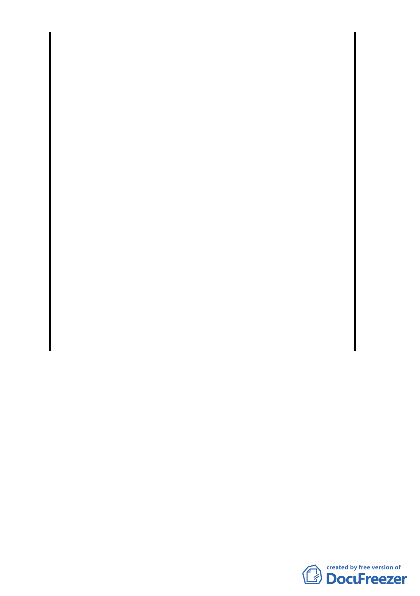

問題視為私權問題與整體開發權分割處理，非常不
公平。
七、本公司因提出『京華再開發計劃』，為了配合台北
市政府的都市發展與照顧西北角小宗地主的利益
付出數億元費用聘請國際知名建築師及顧問公司
設計規劃整體開發方案，不料，如今台北市政府與
小宗地主卻昧於事實，指責本公司更進而損害本公
司權利，有違公平正義，本公司特此發函澄清如上
，以助貴會委員了解事實真相，做出正確決定，敬
請卓參。
八、台北市都市計畫委員會第三八二次委員會紀錄討論
事項十二案名內即載明「三．威京投資開發股份有
限公司（以下簡稱威京公司）旋於 76 年 7 月自唐
榮公司購得上項土地…」顯見計畫書內所記載之威
京公司係指『威京投資開發股份有限公司』無誤。
查威京投資開發股份有限公司係經濟部於民國 74
年 11 月 21 以經（七四）商 50944 號函核准設立，
公司統一編號為 01075324，後奉經濟部 78.4.14 經
（78）121531 號核准變更公司名稱為『威京開發投
資股份有限公司』且公司統一編號相同（01075324
），迄今 103 年 1 月 20 日仍正常營運。故本公司與
民國 76 年 11 月提出開發計畫之「威京投資開發股
份有限公司」實係同一家公司，公司之法人人格並
無變動，僅係於民國 78 年 4 月 14 日奉准變更公司
名稱，一併說明如上。
- 16 -